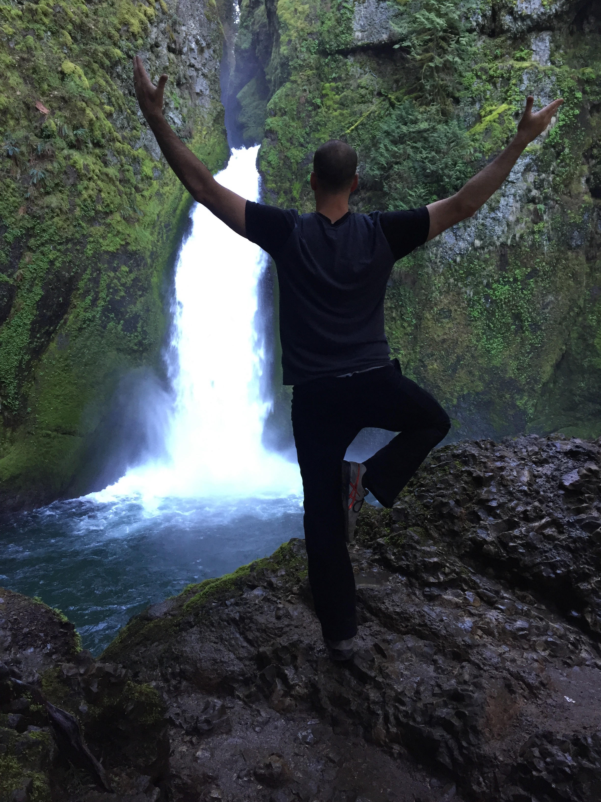

About Me
Ecclectic would be a wonderful word to describe me as a whole. I have a curious mix of strength in right brain and in left. My first passion, however, will always be the theatre.
On the left brain side I have always been interested in science and a drive to discover how things work. My latest endeavor into computers started after rediscovering gaming.